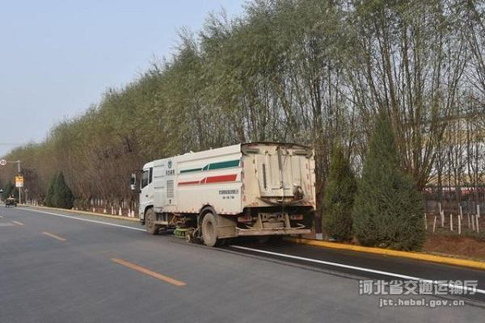
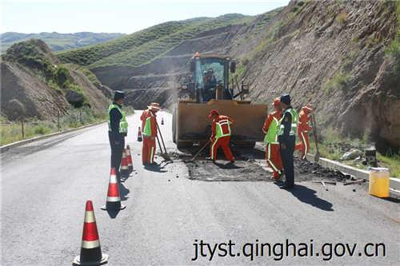
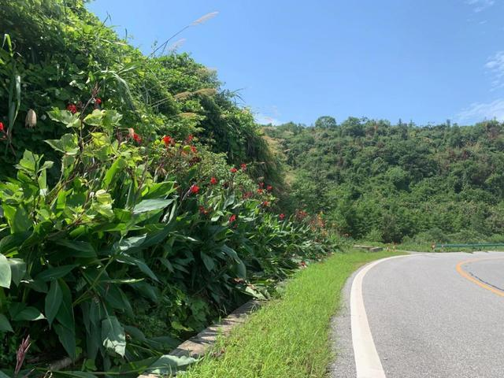

微官网
要闻
科技
养护
会展
深度
数据
运营
地方
河北：邯郸市广平交通全面做好冬季农村公路养护工作
2020-12-09 10:05:17
石胜涛

“苏式养护”保障江苏高速公路网络安全畅通
2020-11-18 11:01:26
梅剑飞 朱 璇
广西国省干线公路养护工程完工
2020-10-15 14:36:06
记者/吴丽萍 通讯员/李雪芝
海南农村公路养路员纳入公益性岗位
2020-09-17 09:05:22
部发布《公路养护工程质量检验评定标准 第一册 土建工程》
2020-09-16 09:45:26
青海：湟源路政支队管养协调治公路病害
2020-09-03 09:49:02

这条27000米长的旅游公路，隐藏着60种彩蛋
2020-08-27 11:06:53
记者罗晖 文字 贺方程 图片除署名外均为何小白摄

吉林加快公路养护全过程电子招投标
2020-08-26 09:16:10
查看更多...
触屏版
电脑版
服务热线 (010)84990712
中国高速公路网—21世纪公路网版权所有，未经协议授权，禁止转载。
京ICP备05048991号-3
 微官网
微官网